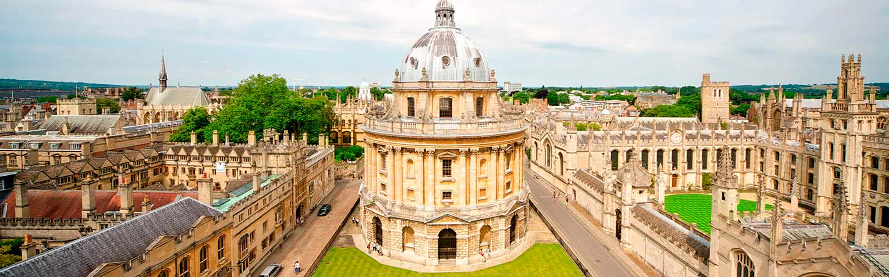

Hay 39 universidades de Oxford , que son financieramente independientes y autónomas, pero se relacionan con la Universidad central en una especie de sistema federal. También hay seis salas privadas permanentes, que son similares a las universidades, excepto que tienden a ser más pequeñas y fueron fundadas por denominaciones cristianas particulares. Los colegios y salas son comunidades académicas cercanas, que reúnen a estudiantes e investigadores de diferentes disciplinas, culturas y países. Esto ayuda a fomentar el destacado logro de investigación que ha convertido a Oxford en un líder en muchos campos.

Los estudiantes y el personal de Oxford provienen de todos los orígenes imaginables. Hay alrededor de 24,000 estudiantes de más de 140 países en Oxford, que estudian aquí como estudiantes universitarios y postgraduados. Su sorprendente variedad de historias e intereses ayuda a hacer de Oxford uno de los entornos de aprendizaje más emocionantes en cualquier lugar, así como uno con recursos extraordinarios para ofrecer a sus estudiantes.

Existe un acuerdo universal de que Oxford necesita avanzar más rápidamente en la diversificación de su cuerpo estudiantil de pregrado. La diversidad es importante como un bien social por derecho propio, y está manifiestamente en el interés propio de Oxford: para que la Universidad continúe prosperando, necesitamos reclutar a las mejores personas de todos los orígenes. Una mayor diversidad fortalecerá la vitalidad intelectual de la Universidad.

IDIOMAS
leer más
Estudios Superiores
leer más
Primaria y Bachillerato
leer más